library(scales)The R book （3rd）
环境准备（必看）
- 下载项目文件夹，用 R/RStudio 打开项目根目录（确保包含
renv.lock文件）； - 在 R 控制台运行以下代码，一键还原环境： 安装 renv（若未安装）
if (!require(renv)) install.packages("renv", repos = "https://mirrors.tuna.tsinghua.edu.cn/CRAN/")# 还原环境（自动安装 renv.lock 中记录的所有包及版本）renv::restore()
学习
x <- seq(0, 10, 0.01)
plot(x, exp(x), ylab = 'y', type = "l", col = scales::hue_pal()(2)[1])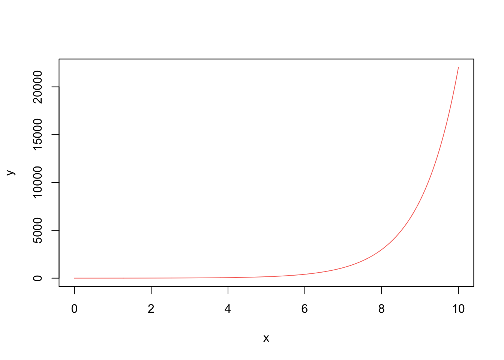
plot(x, log(x), ylab = 'z', type = "l", col = scales::hue_pal()(2)[2])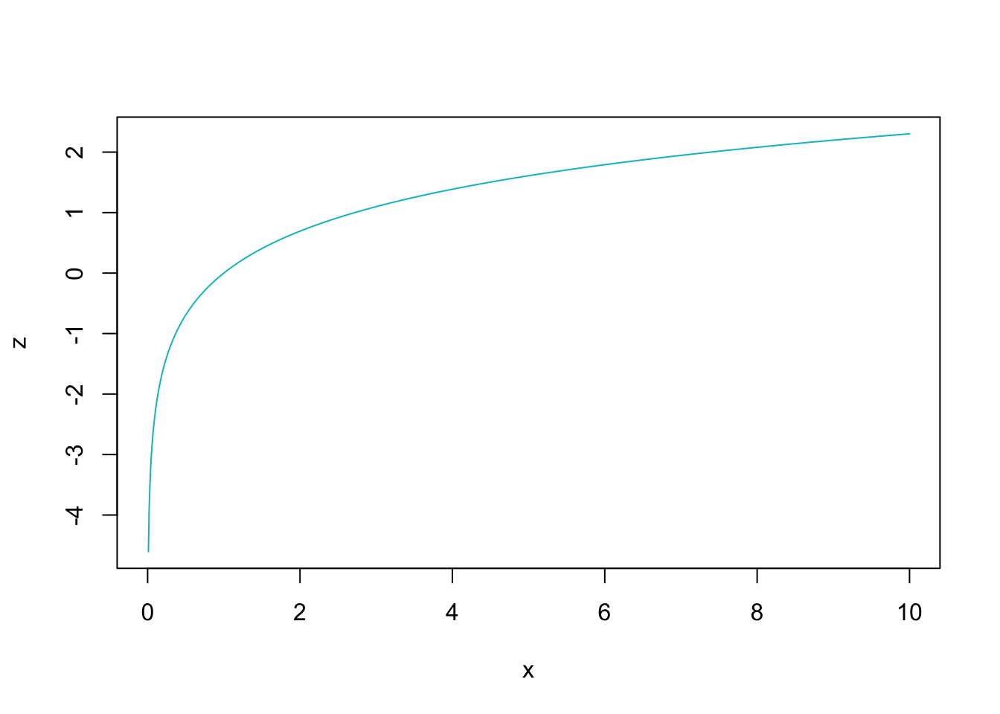
x <- seq(0, 2 * pi, 0.01)
sinx <- sin(x)
cosx <- cos(x)
tanx <- tan(x)
plot(
x,
sinx,
ylim = c(-3, 3),
ylab = "",
type = "l",
col = scales::hue_pal()(3)[1]
)
lines(x, cosx, col = scales::hue_pal()(3)[2])
lines(x, tanx, col = scales::hue_pal()(3)[3])
legend(
2,
3,
legend = c("sin (x)", "cos (x)", "tan (x)"),
lwd = rep(1, 3),
col = scales::hue_pal()(3),
bty = "n"
)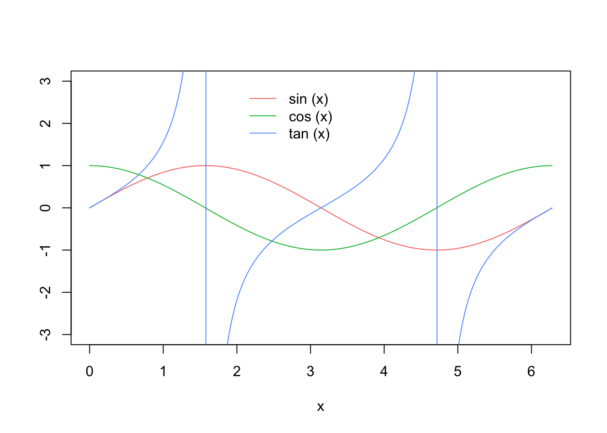
library(scales)
x <- seq(0, 2, 0.01)
plot(
x,
1 / x^2,
type = "l",
ylab = expression(x^b),
col = hue_pal()(6)[1],
ylim = c(0, 4)
)
lines(x, 1 / x, col = hue_pal()(6)[2])
abline(h = 1, col = hue_pal()(6)[3])
lines(x, x^0.5, col = hue_pal()(6)[4])
lines(x, x, col = hue_pal()(6)[5])
lines(x, x^2, col = hue_pal()(6)[6])
legend(
0.9,
4,
bty = "n",
legend = c("b = -2", "b = -1", "b = 0", "b = 0.5", "b = 1", "b = 2"),
col = hue_pal()(6),
lwd = 1
)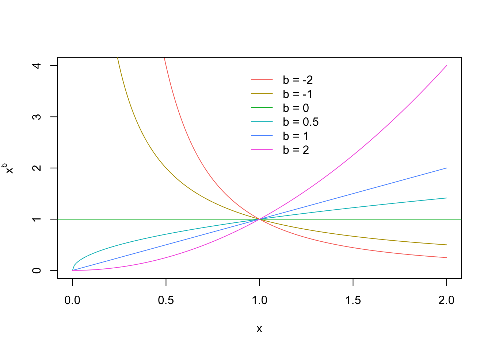
library(scales)
x <- seq(0, 10, 0.01)
y = 5 * x - 0.2 * x^2
plot(x, y, type = "l", col = hue_pal()(4)[1], xaxt = "n", yaxt = "n")
y = 5 * x - 0.4 * x^2
plot(x, y, type = "l", col = hue_pal()(4)[2], xaxt = "n", yaxt = "n")
y = 2 + 4 * x - 0.6 * x^2 + 0.04 * x^3
plot(x, y, type = "l", col = hue_pal()(4)[3], xaxt = "n", yaxt = "n")
y = 2 + 4 * x + 2 * x^2 - 0.6 * x^3 + 0.04 * x^4
plot(x, y, type = "l", col = hue_pal()(4)[4], xaxt = "n", yaxt = "n")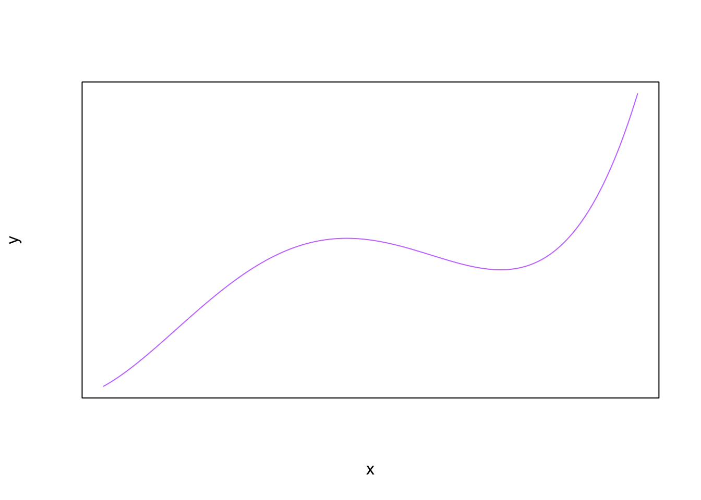
A <- matrix(c(1, 0, 4, 2, -1, 1), nrow = 3)
A [,1] [,2]
[1,] 1 2
[2,] 0 -1
[3,] 4 1B <- matrix(c(1, -1, 2, 1, 1, 0), ncol = 3)
B [,1] [,2] [,3]
[1,] 1 2 1
[2,] -1 1 0用 matrix() 将该向量按 nrow = 3（3 行）排列为矩阵，默认按列填充。
| 提取方式 | 语法示例 | 结果（基于矩阵 A） |
说明 |
|---|---|---|---|
| 单下标（列优先） | A[1] |
1 |
第 1 列第 1 行 |
A[4] |
2 |
第 2 列第 1 行（列优先遍历） | |
| 多下标（行，列） | A[1, 2] |
2 |
第 1 行第 2 列 |
A[3, ] |
4 1 |
第 3 行的所有列 | |
A[, 1] |
1 0 4 |
第 1 列的所有行 | |
| 范围提取 | A[1:2, 2] |
2 -1 |
第 1-2 行、第 2 列 |
A[, c(1, 2)] |
整个矩阵 | 选择第 1、2 列（等价于A） |
|
| 排除行 / 列 | A[-1, ] |
第 2-3 行的所有列 | -1 表示排除第 1 行 |
A[, -2] |
第 1 列的所有行 | -2 表示排除第 2 列 |
|
| 条件筛选（逻辑向量） | A[A > 0] |
1 4 2 1 |
提取所有大于 0 的元素 |
| 按行优先提取（转置） | t(A)[4] |
4 |
转置后按列优先（等价原矩阵行优先） |
C <- A %*% B
C [,1] [,2] [,3]
[1,] -1 4 1
[2,] 1 -1 0
[3,] 3 9 4# 行列式计算
det(C)[1] -4.662937e-15# if (!is.matrix(A)) {
# A <- as.matrix(A)
# }
# if (nrow(A) == ncol(A)) {
# detA <- det(A)
# } else {
# stop("A is not square: nrow = ", nrow(A), ", ncol = ", ncol(A))
# }A <- matrix(c(1, 2, 3, 4, 1, 1, 3, 3, 2), nrow = 3)
A [,1] [,2] [,3]
[1,] 1 4 3
[2,] 2 1 3
[3,] 3 1 2solve(A) [,1] [,2] [,3]
[1,] -0.0625 -0.3125 0.5625
[2,] 0.3125 -0.4375 0.1875
[3,] -0.0625 0.6875 -0.4375Suppose we have two linear equations containing two unknown variables that we can reorganise so that they are laid out in a similar fashion: * 3x +4y= 12 * x +2y= 8. (2.2) () to find the values of the variables if we provide it with two Then, we can use the function solve matrices: • a square matrix A containing the coefficients of the variables (3, 4, 1, 2), laid out as above; • a column vector k containing the known values (12 and 8). We set the two matrices up like this (column-wise, as usual), and solve: Av= k,
A <- matrix(c(3, 1, 4, 2), nrow = 2)
k <- matrix(c(12, 8), nrow = 2)
v <- solve(A, k)
v [,1]
[1,] -4
[2,] 6求导表达式
D(expression(2 * x^3), "x")2 * (3 * x^2)Calculations
log(42 / 7.3)[1] 1.749795sum(1, 2, 3, 4, 5, 6, 6, 7)[1] 34z <- 3.5 - 8i
Re(z)[1] 3.5Im(z)[1] -8Mod(z)[1] 8.732125Arg(z)[1] -1.158386Conj(z)[1] 3.5+8i3^2 / 2[1] 4.5119 %/% 13 # modular arithmetic ,in python using '//'[1] 9x <- 0:6
length(x)[1] 7x < 4[1] TRUE TRUE TRUE TRUE FALSE FALSE FALSEall(x > 0)[1] FALSEany(x < 0)[1] FALSEsum(x < 4) # meaning count[1] 4(x < 4) * runif(7)[1] 0.8317014 0.4856071 0.6463007 0.3521950 0.0000000 0.0000000 0.0000000(x < 4) * 2 # True is 1，False is 0[1] 2 2 2 2 0 0 0(treatment <- letters[1:5])[1] "a" "b" "c" "d" "e"(t2 <- factor(
1 + (treatment == "b") + 2 * (treatment == "c") + 2 * (treatment == "d")
))[1] 1 2 3 3 1
Levels: 1 2 30:10 [1] 0 1 2 3 4 5 6 7 8 9 10letters [1] "a" "b" "c" "d" "e" "f" "g" "h" "i" "j" "k" "l" "m" "n" "o" "p" "q" "r" "s"
[20] "t" "u" "v" "w" "x" "y" "z"month.abb [1] "Jan" "Feb" "Mar" "Apr" "May" "Jun" "Jul" "Aug" "Sep" "Oct" "Nov" "Dec"month.name [1] "January" "February" "March" "April" "May" "June"
[7] "July" "August" "September" "October" "November" "December" class(month.abb)[1] "character"mode(month.abb)[1] "character"typeof(month.abb)[1] "character"class(unlist(month.abb))[1] "character"month.abb[1][1] "Jan"N <- c(55, 76, 92, 103, 84, 88, 121, 91, 65, 77, 99)
N_factor <- seq(from = 0.04, by = 0.01, along = N)
df <- tibble::tibble(N, N_factor)
df# A tibble: 11 × 2
N N_factor
<dbl> <dbl>
1 55 0.04
2 76 0.05
3 92 0.06
4 103 0.07
5 84 0.08
6 88 0.09
7 121 0.1
8 91 0.11
9 65 0.12
10 77 0.13
11 99 0.14Generating repeats
rep(9, 5)[1] 9 9 9 9 9rep(1:4, 2)[1] 1 2 3 4 1 2 3 4rep(1:4, each = 2)[1] 1 1 2 2 3 3 4 4rep(1:4, each = 2, times = 3) [1] 1 1 2 2 3 3 4 4 1 1 2 2 3 3 4 4 1 1 2 2 3 3 4 4rep(1:4, 1:4) [1] 1 2 2 3 3 3 4 4 4 4rep(1:4, c(4, 1, 4, 2)) [1] 1 1 1 1 2 3 3 3 3 4 4rep(c("cat", "dog", "gerbil", "goldfish", "rat"), c(2, 3, 2, 1, 3)) [1] "cat" "cat" "dog" "dog" "dog" "gerbil"
[7] "gerbil" "goldfish" "rat" "rat" "rat" Generating factor levels
gl(4, 3) [1] 1 1 1 2 2 2 3 3 3 4 4 4
Levels: 1 2 3 4gl(4, 3, 24) [1] 1 1 1 2 2 2 3 3 3 4 4 4 1 1 1 2 2 2 3 3 3 4 4 4
Levels: 1 2 3 4gloss <- gl(2, 2, 24, labels = c("Low", "High"))
give <- gl(3, 8, 24, labels = c("Hard", "Medium", "Soft"))
flammable <- gl(2, 4, 24, labels = c("N", "Y"))
brand <- gl(2, 1, 24, labels = c("X", "M"))
data.frame(gloss, give, flammable, brand) gloss give flammable brand
1 Low Hard N X
2 Low Hard N M
3 High Hard N X
4 High Hard N M
5 Low Hard Y X
6 Low Hard Y M
7 High Hard Y X
8 High Hard Y M
9 Low Medium N X
10 Low Medium N M
11 High Medium N X
12 High Medium N M
13 Low Medium Y X
14 Low Medium Y M
15 High Medium Y X
16 High Medium Y M
17 Low Soft N X
18 Low Soft N M
19 High Soft N X
20 High Soft N M
21 Low Soft Y X
22 Low Soft Y M
23 High Soft Y X
24 High Soft Y MClass membership
lv <- c(T, F, T)
is.logical(lv)[1] TRUE(fv <- as.factor(lv))[1] TRUE FALSE TRUE
Levels: FALSE TRUEis.factor(fv)[1] TRUE(nv <- as.numeric(lv))[1] 1 0 1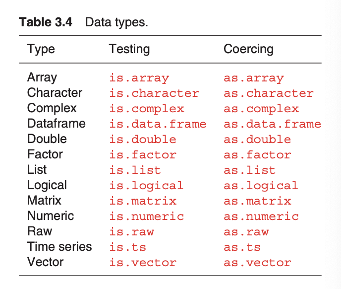
geometric <- function(x) {
try(
if (!is.numeric(x)) {
stop("Input must be numeric")
}
)
try(
if (min(x) <= 0) {
stop("Input must be greater than zero")
}
)
exp(mean(log(x)))
}
geometric(c(2, 3, 0, 4))Error in try(if (min(x) <= 0) { : Input must be greater than zero[1] 0Missing values, infinity, and things that are not numbers
3 / 0[1] Inf-12 / 0[1] -Infexp(-Inf)[1] 00 / Inf[1] 00 / 0[1] NaNInf - Inf[1] NaNInf / Inf[1] NaNis.finite(10)[1] TRUEis.infinite(10)[1] FALSEis.infinite(Inf)[1] TRUEis.infinite(-Inf)[1] TRUEy1 <- c(1, 2, 3, 6)
y2 <- c(5, 6, NA, 8)
y3 <- c(9, 10, 11, 12)
y4 <- c(NA, 14, 15, 16)
(full_frame <- data.frame(y1, y2, y3, y4)) y1 y2 y3 y4
1 1 5 9 NA
2 2 6 10 14
3 3 NA 11 15
4 6 8 12 16(reduced_frame1 <- na.omit(full_frame)) y1 y2 y3 y4
2 2 6 10 14
4 6 8 12 16(reduced_frame1 <- full_frame[!is.na(full_frame$y1), ]) y1 y2 y3 y4
1 1 5 9 NA
2 2 6 10 14
3 3 NA 11 15
4 6 8 12 16x <- c(1:8, NA)
mean(x)[1] NAmean(x, na.rm = T)[1] 4.5(vmv <- c(1:6, NA, NA, 9:12)) [1] 1 2 3 4 5 6 NA NA 9 10 11 12which(is.na(vmv))[1] 7 8seq(along = vmv)[is.na(vmv)][1] 7 8vmv[is.na(vmv)] <- 0 # is.na的位置，赋值0
vmv <- c(1:6, NA, NA, 9:12)
ifelse(is.na(vmv), 0, vmv) [1] 1 2 3 4 5 6 0 0 9 10 11 12peas <- c(4, 7, 6, 5, 6, 7)
quantile(peas, 0.5)50%
6 mean(peas)[1] 5.833333median(peas)[1] 6vector functions
y <- c(8, 3, 5, 7, 6, 6, 8, 9, 2, 3, 9, 4, 10, 4, 11)
max(y)[1] 11min(y)[1] 2sum(y)[1] 95mean(y)[1] 6.333333median(y)[1] 6range(y)[1] 2 11var(y)[1] 7.809524quantile(y) 0% 25% 50% 75% 100%
2.0 4.0 6.0 8.5 11.0 cumsum(y) [1] 8 11 16 23 29 35 43 52 54 57 66 70 80 84 95cumprod(y) [1] 8 24 120 840 5040
[6] 30240 241920 2177280 4354560 13063680
[11] 117573120 470292480 4702924800 18811699200 206928691200cummax(y) [1] 8 8 8 8 8 8 8 9 9 9 9 9 10 10 11cummin(y) [1] 8 3 3 3 3 3 3 3 2 2 2 2 2 2 2Obtaining tables using tapply ()
library(here)here() starts at /Users/crccredc/Documents/github/R4S2data <- read.table(here('data/Rbook', 'temp_data.txt'), header = TRUE)
head(data) yr month temperature
1 1883 1 6.3
2 1883 2 8.0
3 1883 3 4.8
4 1883 4 12.2
5 1883 5 14.7
6 1883 6 17.7tapply(data$temperature, data$month, mean) # If NA , need to na.rm=T 1 2 3 4 5 6 7 8 9 10 11 12
NA NA NA NA NA NA NA NA NA NA NA NA tapply(data$temperature, data$month, mean, na.rm = T) 1 2 3 4 5 6 7 8
6.272519 6.619084 8.923664 11.832824 15.408397 18.522901 20.254264 19.863566
9 10 11 12
17.293798 13.193023 9.151163 6.879845 tapply(data$temperature, data$month, var, na.rm = T) 1 2 3 4 5 6 7 8
3.094931 4.302787 4.116436 2.555607 2.233852 2.167164 3.304532 2.786084
9 10 11 12
1.953555 1.910185 1.399237 2.452559 tapply(data$temperature, data$month, min, na.rm = T) 1 2 3 4 5 6 7 8 9 10 11 12
1.3 -0.6 4.5 8.5 11.9 15.1 16.2 16.0 13.7 9.8 5.9 1.9 tapply(data$temperature, data$month, function(x) {
sqrt(var(x, na.rm = T) / length(x))
}) 1 2 3 4 5 6 7 8
0.1531223 0.1805460 0.1765931 0.1391426 0.1300889 0.1281324 0.1582224 0.1452814
9 10 11 12
0.1216538 0.1202959 0.1029577 0.1363085 Loops and repeats
fibonacci <- function(n) {
a <- 1
b <- 0
while (n > 0) {
swap <- a
a <- a + b
b <- swap
n <- n - 1
}
b
}
fibonacci(10)[1] 55sapply(1:10, fibonacci) [1] 1 1 2 3 5 8 13 21 34 55N <- numeric(20)
N [1] 0 0 0 0 0 0 0 0 0 0 0 0 0 0 0 0 0 0 0 0Pasting character strings together
drive <- "c:"
folder <- "temp"
file <- "file"
extension <- ".txt"
paste(drive, folder, file, extension)[1] "c: temp file .txt"paste(drive, "\\", folder, "\\", file, extension, sep = "")[1] "c:\\temp\\file.txt"Dates and times in R
now <- Sys.time()
now[1] "2025-12-03 14:31:00 CST"as.numeric(now)[1] 1764743461class(now)[1] "POSIXct" "POSIXt" time.list <- as.POSIXlt(Sys.time())
unlist(time.list) sec min hour mday
"0.885808944702148" "31" "14" "3"
mon year wday yday
"11" "125" "3" "336"
isdst zone gmtoff
"0" "CST" "28800" y1 <- "2015-10-22"
y2 <- "2018-10-22"
y1 <- as.POSIXlt(y1)
y2 <- as.POSIXlt(y2)
y1 - y2Time difference of -1096 dayst1 <- as.difftime("6:14:21")
t2 <- as.difftime("5:12:32")
t1 - t2Time difference of 1.030278 hourschapter 4
Data Input and Dataframes
getwd()[1] "/Users/crccredc/Documents/github/R4S2"library(tidyverse)── Attaching core tidyverse packages ──────────────────────── tidyverse 2.0.0 ──
✔ dplyr 1.1.4 ✔ readr 2.1.6
✔ forcats 1.0.1 ✔ stringr 1.6.0
✔ ggplot2 4.0.1 ✔ tibble 3.3.0
✔ lubridate 1.9.4 ✔ tidyr 1.3.1
✔ purrr 1.2.0
── Conflicts ────────────────────────────────────────── tidyverse_conflicts() ──
✖ readr::col_factor() masks scales::col_factor()
✖ purrr::discard() masks scales::discard()
✖ dplyr::filter() masks stats::filter()
✖ dplyr::lag() masks stats::lag()
ℹ Use the conflicted package (<http://conflicted.r-lib.org/>) to force all conflicts to become errorslibrary(gcookbook)
# point
plot(mtcars$wt, mtcars$mpg)
plot(pressure$temperature, pressure$pressure, type = 'l', col = 'red')
points(pressure$temperature, pressure$pressure, col = 'blue')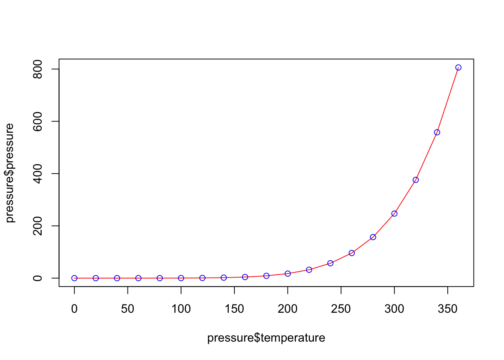
ggplot(pressure, aes(x = temperature, y = pressure)) +
geom_line(color = 'red') +
geom_point(color = 'blue') +
theme_minimal()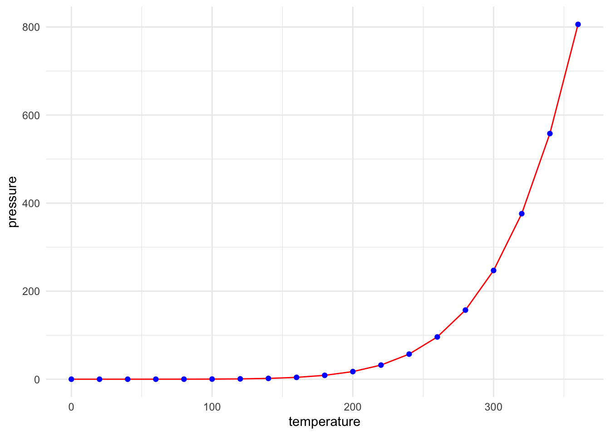
BOD Time demand
1 1 8.3
2 2 10.3
3 3 19.0
4 4 16.0
5 5 15.6
6 7 19.8barplot(BOD$demand, names.arg = BOD$Time)
barplot(table(mtcars$cyl))
glimpse(BOD)Rows: 6
Columns: 2
$ Time <dbl> 1, 2, 3, 4, 5, 7
$ demand <dbl> 8.3, 10.3, 19.0, 16.0, 15.6, 19.8library(tidyverse)
library(ggplot2)
ggplot(BOD, aes(x = factor(Time), y = demand)) +
geom_col()library(tidyverse)
library(ggplot2)
ggplot(BOD, aes(x = as_factor(Time), y = demand)) +
geom_col()ggplot(mtcars, aes(x = cyl)) +
geom_bar()
ggplot(mtcars, aes(x = factor(cyl), fill = factor(cyl))) +
geom_bar()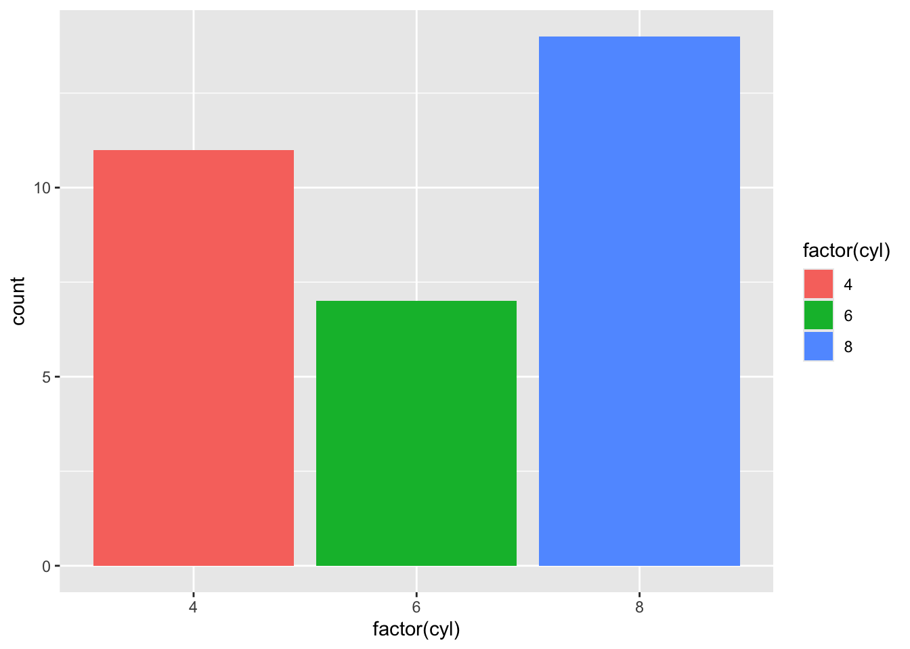
hist(mtcars$mpg)
hist(mtcars$mpg, breaks = 10)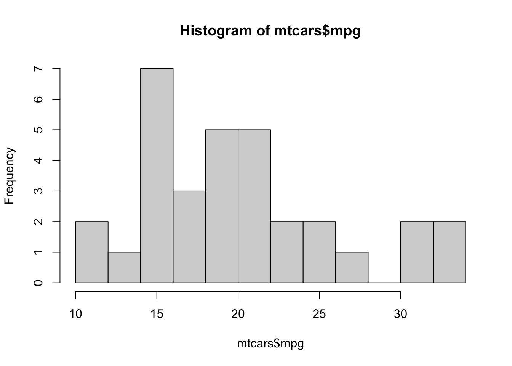
ggplot(mtcars, aes(x = mpg)) +
geom_histogram(binwidth = 4)
glimpse(ToothGrowth)Rows: 60
Columns: 3
$ len <dbl> 4.2, 11.5, 7.3, 5.8, 6.4, 10.0, 11.2, 11.2, 5.2, 7.0, 16.5, 16.5,…
$ supp <fct> VC, VC, VC, VC, VC, VC, VC, VC, VC, VC, VC, VC, VC, VC, VC, VC, V…
$ dose <dbl> 0.5, 0.5, 0.5, 0.5, 0.5, 0.5, 0.5, 0.5, 0.5, 0.5, 1.0, 1.0, 1.0, …plot(ToothGrowth$supp, ToothGrowth$len)
boxplot(len ~ supp, data = ToothGrowth)
boxplot(len ~ supp + dose, data = ToothGrowth)
ggplot(data = ToothGrowth, aes(x = supp, y = len)) +
geom_boxplot()
ggplot(data = ToothGrowth, aes(x = interaction(supp, dose), y = len)) +
geom_boxplot()
Plotting a Function Curve
curve(x^3 - 5 * x, from = -4, to = 4)
my_func <- function(x) {
1 / (1 + exp(-x + 10))
}
curve(my_func(x), from = 0, to = 20)
curve(1 - my_func(x), add = T, col = 'red')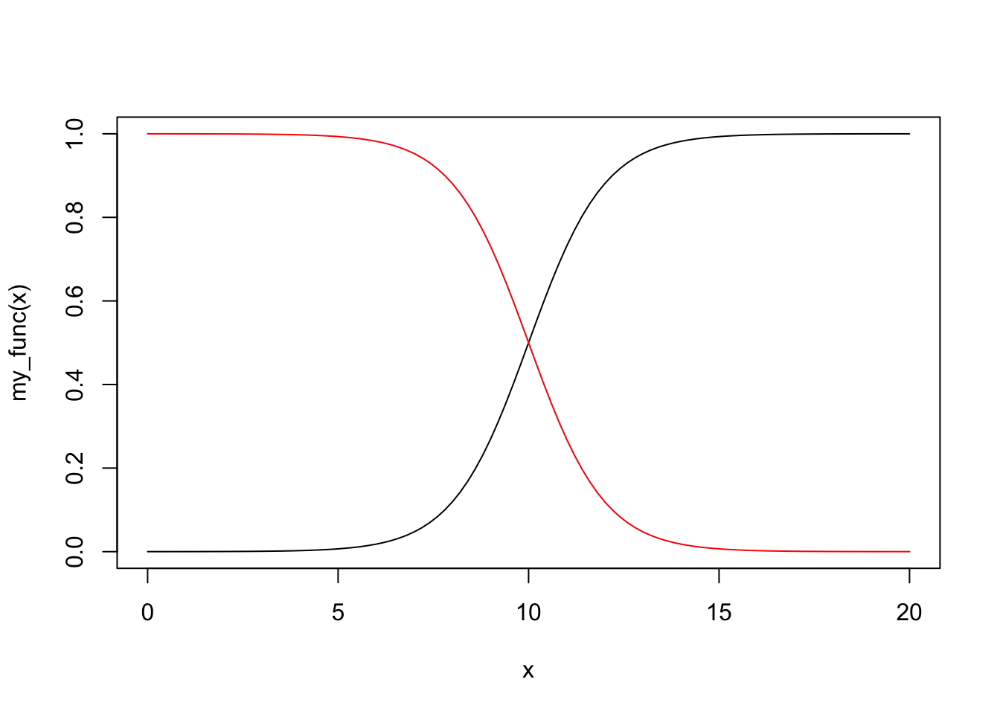
ggplot(data.frame(x = c(0, 20)), aes(x = x)) +
stat_function(fun = my_func, geom = 'line')
fx <- function(x) {
1 * x^2 - 20 * x - 19
}
curve(fx(x), from = -20, to = 20)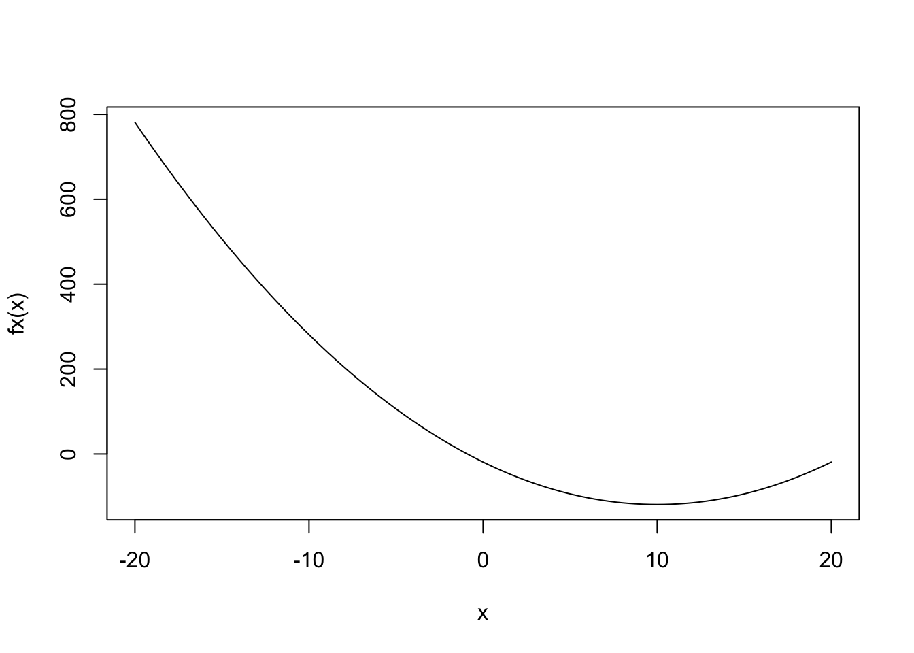
x <- seq(-5, 5, by = 0.1)
y <- x^2 - 4
plot(x, y, type = "l", xlab = "x", ylab = "y", main = "y = x^2 - 4")
abline(v = 0, col = "red", lty = 2)
abline(h = 0, col = "blue", lty = 2)
# 找到y = 0时的x值
x_at_y0 <- x[which(y == 0)]
points(x_at_y0, rep(0, length(x_at_y0)), pch = 19, col = "green")
for (i in 1:length(x_at_y0)) {
text(
x_at_y0[i],
0,
labels = paste0("x = ", x_at_y0[i]),
pos = 3,
col = "green"
)
}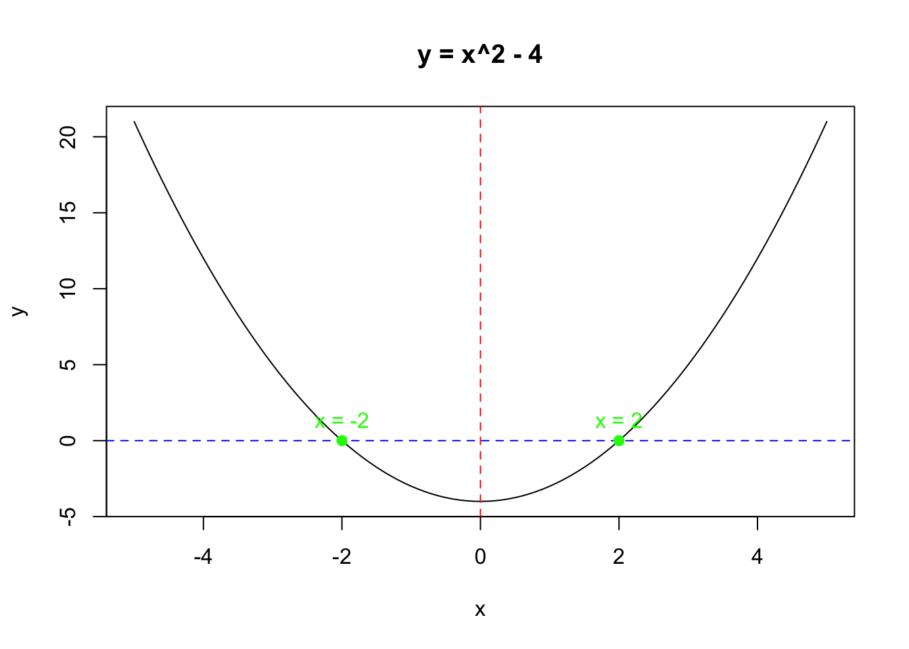
library(ggplot2)
data <- data.frame(x = seq(-5, 5, by = 0.1))
data$y <- data$x^2 - 4
# 找到y = 0时的x值
x_at_y0 <- data$x[data$y == 0]
ggplot(data, aes(x = x, y = y)) +
geom_line() +
xlab("x") +
ylab("y") +
ggtitle("y = x^2 - 4") +
geom_vline(xintercept = 0, color = "red", linetype = "dashed") +
geom_hline(yintercept = 0, color = "blue", linetype = "dashed") +
geom_point(data = data[data$y == 0, ], aes(x = x, y = y), color = "green") +
geom_text(
data = data[data$y == 0, ],
aes(x = x, y = y, label = paste0("x = ", x)),
vjust = -1,
color = "green"
) +
theme_minimal()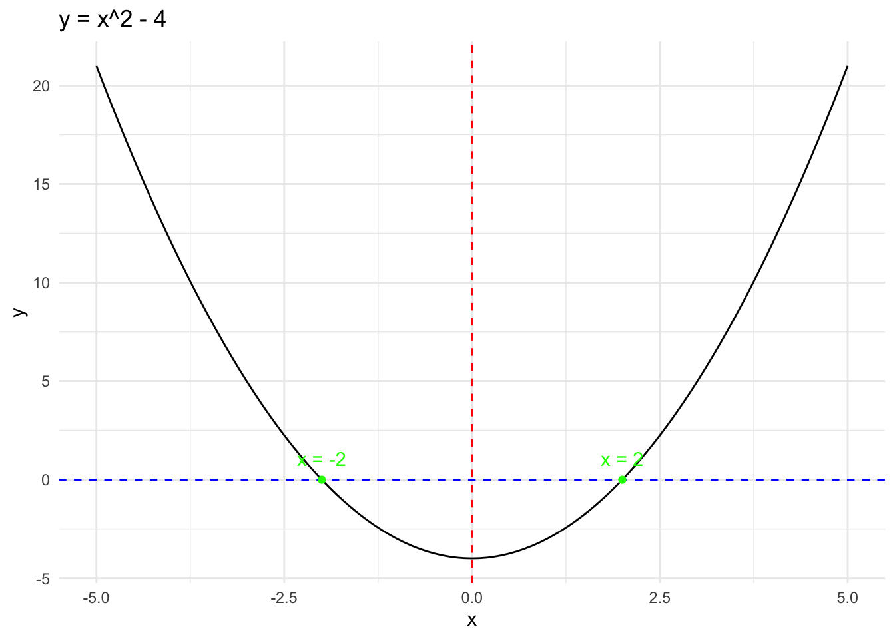
Making a Basic Bar Graph
library(gcookbook)
library(ggplot2)
ggplot(data = pg_mean, aes(x = group, y = weight)) +
geom_col()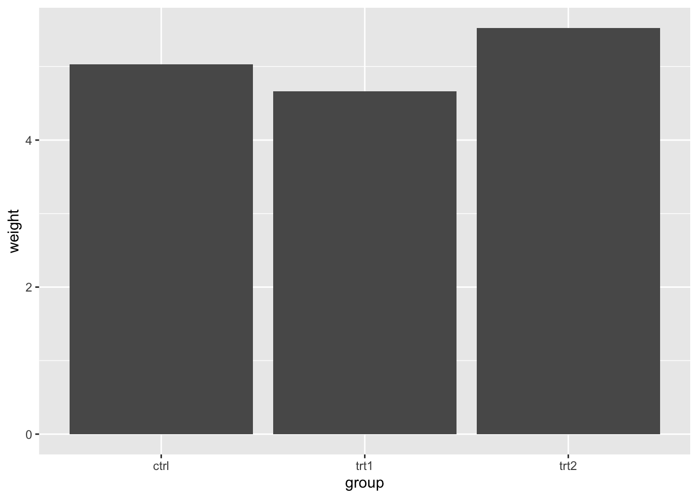
BOD Time demand
1 1 8.3
2 2 10.3
3 3 19.0
4 4 16.0
5 5 15.6
6 7 19.8str(BOD)'data.frame': 6 obs. of 2 variables:
$ Time : num 1 2 3 4 5 7
$ demand: num 8.3 10.3 19 16 15.6 19.8
- attr(*, "reference")= chr "A1.4, p. 270"ggplot(BOD, aes(x = Time, y = demand)) +
geom_col()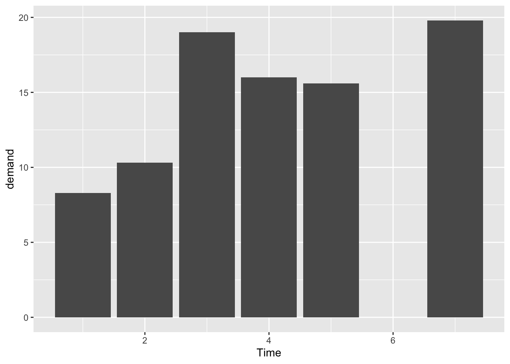
# covert Time to a discrete(categorical variable with factor(),or as.factor()
ggplot(BOD, aes(x = as.factor(Time), y = demand)) +
geom_col()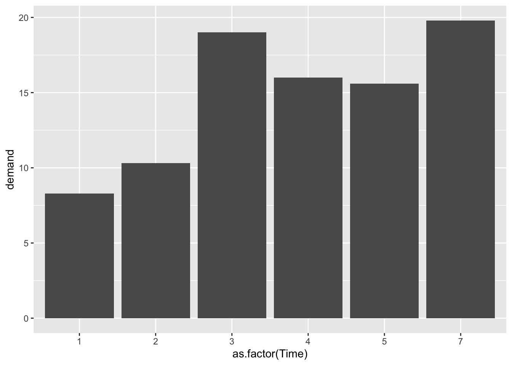
ggplot(pg_mean, aes(x = group, y = weight)) +
geom_col(fill = 'lightblue', colour = 'black')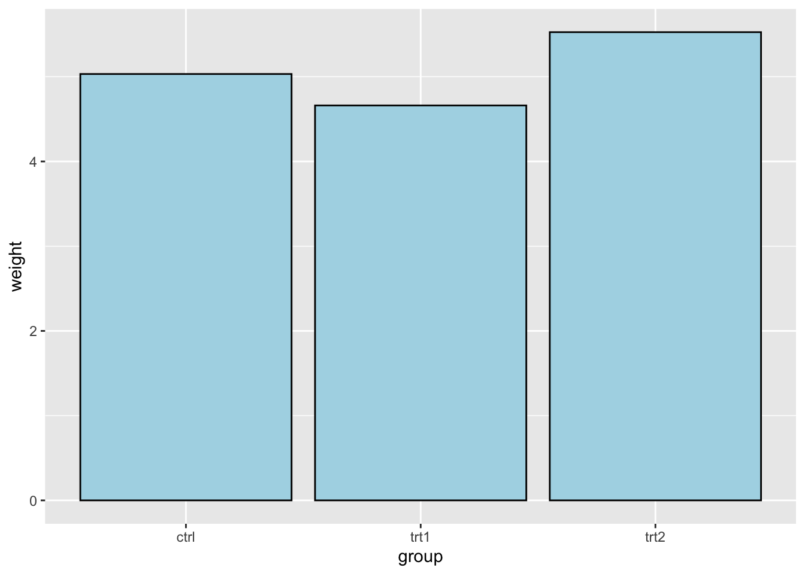
去掉一个数据后，bar图会变宽。需要将对应的数据变为NA
library(tidyverse)
library(gcookbook)
glimpse(cabbage_exp)Rows: 6
Columns: 6
$ Cultivar <fct> c39, c39, c39, c52, c52, c52
$ Date <fct> d16, d20, d21, d16, d20, d21
$ Weight <dbl> 3.18, 2.80, 2.74, 2.26, 3.11, 1.47
$ sd <dbl> 0.9566144, 0.2788867, 0.9834181, 0.4452215, 0.7908505, 0.2110…
$ n <int> 10, 10, 10, 10, 10, 10
$ se <dbl> 0.30250803, 0.08819171, 0.31098410, 0.14079141, 0.25008887, 0…ce <- cabbage_exp[1:5, ]
ce Cultivar Date Weight sd n se
1 c39 d16 3.18 0.9566144 10 0.30250803
2 c39 d20 2.80 0.2788867 10 0.08819171
3 c39 d21 2.74 0.9834181 10 0.31098410
4 c52 d16 2.26 0.4452215 10 0.14079141
5 c52 d20 3.11 0.7908505 10 0.25008887ggplot(ce, aes(x = Date, y = Weight, fill = Cultivar)) +
geom_col(position = 'dodge', colour = 'black') +
scale_fill_brewer(palette = 'Pastel1') +
theme_minimal()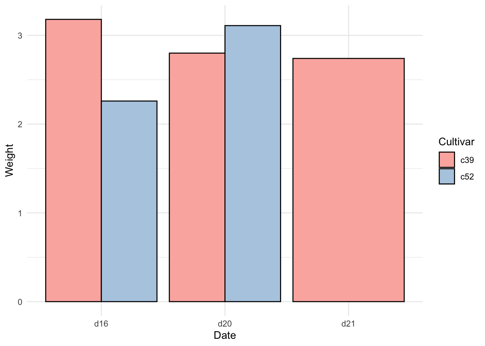
使用bind_rows()来增加和新行数据比较灵活，为指定数据为NA
ce_complete <- bind_rows(
ce,
tibble(
Cultivar = "c52",
Date = "d21"
)
)
ce_complete Cultivar Date Weight sd n se
1 c39 d16 3.18 0.9566144 10 0.30250803
2 c39 d20 2.80 0.2788867 10 0.08819171
3 c39 d21 2.74 0.9834181 10 0.31098410
4 c52 d16 2.26 0.4452215 10 0.14079141
5 c52 d20 3.11 0.7908505 10 0.25008887
6 c52 d21 NA NA NA NA图形的d21位置，c52颜色的bar为空。
ggplot(ce_complete, aes(x = Date, y = Weight, fill = Cultivar)) +
geom_col(position = 'dodge', colour = 'black') +
scale_fill_brewer(palette = 'Pastel1') +
theme_minimal()Warning: Removed 1 row containing missing values or values outside the scale range
(`geom_col()`).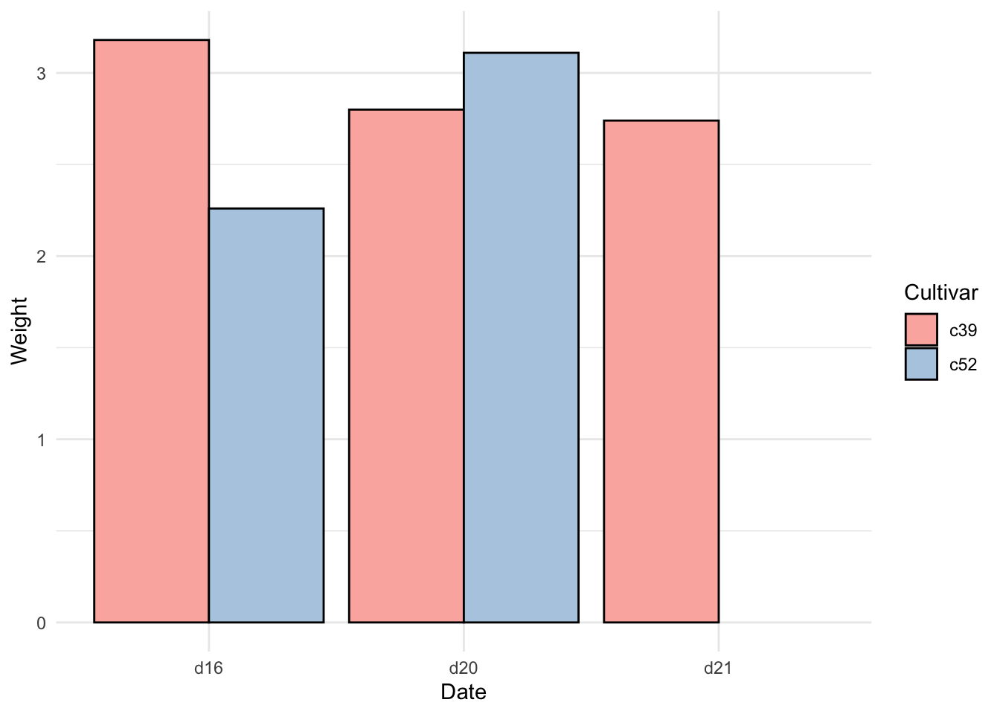
Making a Bar Graph of Counts
library(tidyverse)
ggplot(data = diamonds, aes(x = cut)) +
geom_bar()
library(tidyverse)
ggplot(data = diamonds, aes(x = carat)) +
geom_histogram(bins = 30)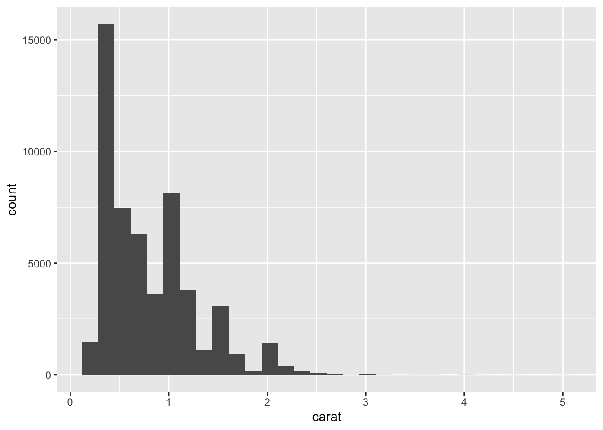
Using colors in a Bar graph
library(gcookbook)
library(dplyr)
upc <- uspopchange |>
arrange(desc(Change)) |>
slice(1:10)
upc State Abb Region Change
1 Nevada NV West 35.1
2 Arizona AZ West 24.6
3 Utah UT West 23.8
4 Idaho ID West 21.1
5 Texas TX South 20.6
6 North Carolina NC South 18.5
7 Georgia GA South 18.3
8 Florida FL South 17.6
9 Colorado CO West 16.9
10 South Carolina SC South 15.3upc data x轴排序，需要按照y来调整，使用reorder
library(tidyverse)
ggplot(upc, aes(x = Abb, y = Change, fill = Region)) +
geom_col()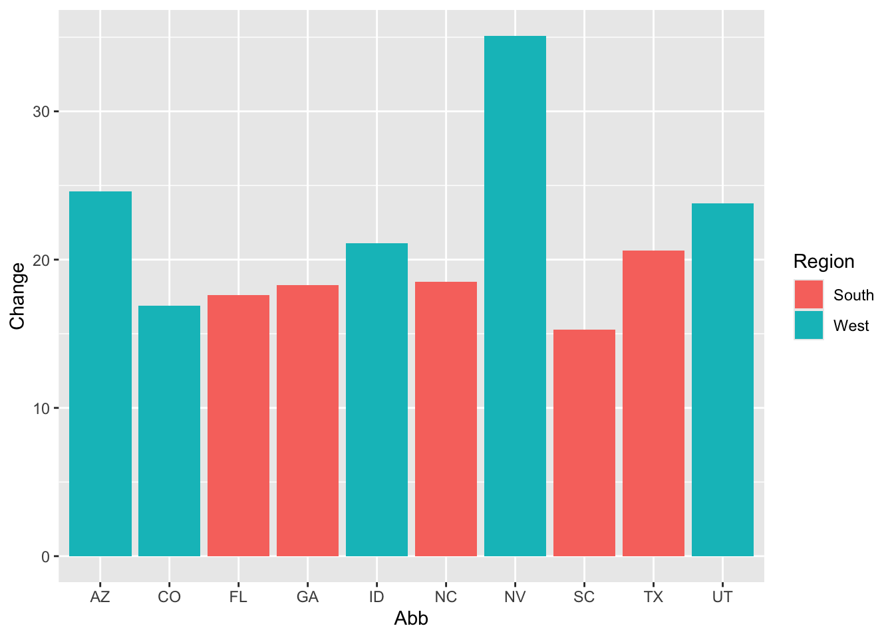
library(tidyverse)
ggplot(upc, aes(x = reorder(Abb, Change), y = Change, fill = Region)) +
geom_col(colour = 'black') +
scale_fill_manual(values = c('#669933', '#FFCC66')) +
xlab('State') +
theme_minimal()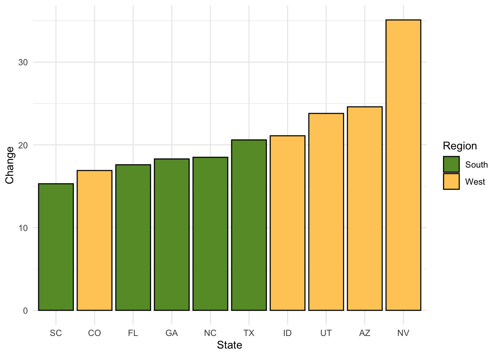
正负数不同颜色显示
library(gcookbook)
library(dplyr)
climate_sub <- climate |>
filter(Source == 'Berkeley' & Year >= 1900) |>
mutate(pos = Anomaly10y > 0)library(ggplot2)
ggplot(climate_sub, aes(x = Year, y = Anomaly10y, fill = pos)) +
geom_col(position = 'identity')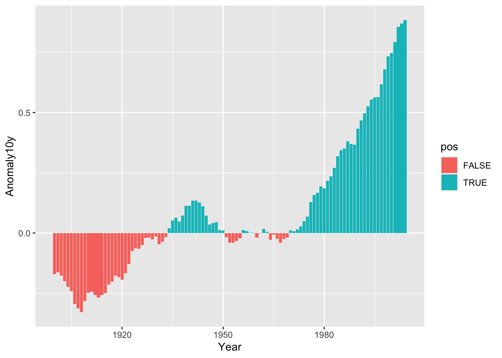